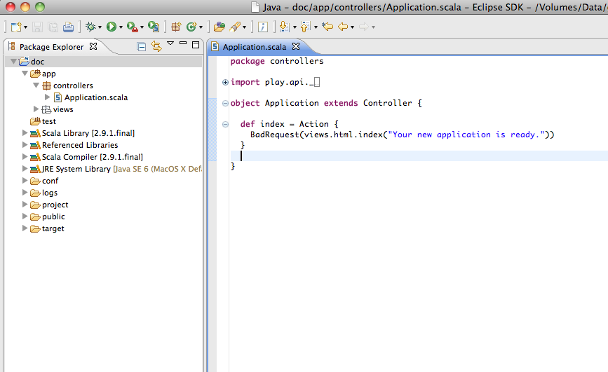

Chapter 5: Setting up your IDE
You do not need to use an IDE such as Eclipse, InteliJ or Netbeans for this workshop, however the Play framework can help you if wish to do so.
Play can generated project files for some of the common developer tools and integrated developer environments (IDE).
Using the play console you can generated the required project files. Please note that if you make significant changes to your project you may have to re-generated these project files.
Eclipse
The Play framework provides a command to generate a project configuration for Eclipse. This transform a Play application into a working Eclipse project.
You can either run play eclipse or open the play console with the command play and use the eclipse command:
[todo] $ eclipse
If you want to grab the available source jars (this will take longer and it’s possible a few sources might be missing):
[todo] $ eclipse with-source=true
Then import the application into your Workspace with the File > Import > General >Existing project… menu (compile your project first).

Using JPDA
You can also start your application with play debug run and then you can use the Connect JPDA launcher using Debug As to start a debugging session at any time. Stopping the debugging session will not stop the server.
Tip: You can run your application using ~run to enable direct compilation on file change. This way scala template files are auto discovered when you create a new template in view and auto compiled when the file changes. If you use normal run then you have to hit Refresh on your browser each time.
If you make any important changes to your application, such as changing the classpath, use eclipse again to regenerate the configuration files.
Tip: Do not commit Eclipse configuration files when you work in a team!
The generated configuration files contain absolute references to your framework installation. These are specific to your own installation. When you work in a team, each developer must keep his Eclipse configuration files private.
InteliJ
Play provides a command to simplify Intellij IDEA configuration. To transform a Play application into a working IDEA module, use the idea command:
[todo] $ idea
If you want to grab the available source jars (this will take longer and it’s possible a few sources might be missing):
[todo] $ idea with-sources=yes
This will create the configuration files IntelliJ needs to open your play application as a project. The files are named .iml and -build.iml. The file menu (IntelliJ 11.1 CE) contains the Open Project command.
Tip: There is an Intellij IDEA issue regarding building Java based Play2 apps while having the Scala plugin installed. Until it’s fixed, the recommended workaround is to disable the Scala plugin.*
To debug, first add a debug configuration
Open Run/Debug Configurations dialog, then click Run > Edit Configurations
Add a Remote configuration, then select Remote
Configure it:
Set a name
Transport: Socket
Debugger mode: Attach
Host: localhost
Port: 9999
Select module you imported
Close dialog - click ApplyStart play in debug mode (in a separate command line console, NOT in IDEA’s Play console):
$ play debug
which should print:
Listening for transport dt_socket at address: 9999
Set some breakpoints then start your new debug configuration from within IDEA. The console output should be:
Connected to the target VM, address: ‘localhost:9999’, transport: ‘socket’
Run the web app by executing the task run in the Play console. Finally, browse to http://localhost:9000. IntelliJ should stop at your breakpoint.
Alternatively, in order not to run more command prompts, first run “play debug run” in IDEA’s Play console, then launch debug configuration.
If you make any important changes to your application, such as changing the classpath, use idea again to regenerate the configuration files.
Netbeans
Play does not have native Netbeans project generation support at this time. For now you can generate a Netbeans Scala project with the Netbeans SBT plugin.
First edit the plugins.sbt file
resolvers += {
"remeniuk repo" at "http://remeniuk.github.com/maven"
}
libraryDependencies += {
"org.netbeans" %% "sbt-netbeans-plugin" % "0.1.4"
}
Now generate the project fles by running the command:
$ play netbeans